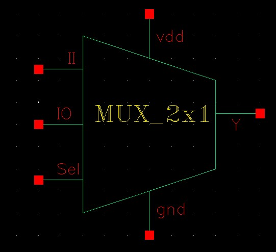
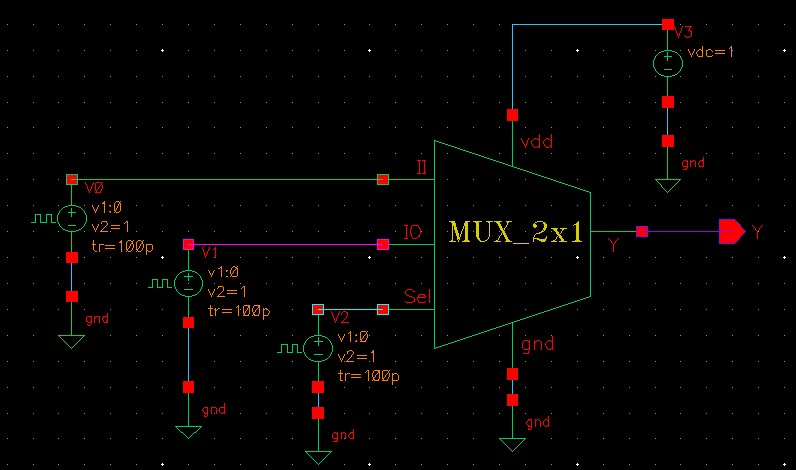

2:1 Multiplexer — Transistor-Level CMOS Design, Symbol Creation & Testbench
Overview
This project showcases the complete design flow of a 2-to-1 CMOS multiplexer using Cadence Virtuoso. The work includes transistor-level schematic implementation, creation of a reusable symbol view, and a functional testbench used to verify correct digital switching behavior. The 2:1 MUX is a fundamental building block in digital systems, enabling signal selection and routing in datapaths and control logic.
Objectives
- Design a CMOS 2:1 multiplexer using PMOS and NMOS transistors.
- Create a clean and reusable symbol view for hierarchical design.
- Build a testbench with pulse sources for I0, I1, and Sel.
- Simulate and verify correct output selection behavior.
- Analyze switching characteristics and logic correctness.
Tools & Technologies
- Cadence Virtuoso (Schematic, Symbol, ADE)
- Spectre Simulator
- CMOS PDK (gpdk090)
Design Methodology
1. Transistor-Level Schematic
The multiplexer implements the logic function:
Y = Sel·I1 + Sel̅·I0
The CMOS network consists of complementary pull-up and pull-down structures that route either I0 or I1 to the output Y depending on the select signal Sel.
- PMOS: w = 120 nm, l = 120 nm
- NMOS: w = 120 nm, l = 120 nm
- Fully complementary transmission structure
2. Symbol Creation
A custom symbol view was created to represent the MUX at a higher abstraction level. The symbol exposes:
- I0 — Input 0
- I1 — Input 1
- Sel — Select line
- Y — Output
- vdd and gnd rails
This symbol is used in the testbench and enables clean hierarchical design.
3. Testbench Setup
A functional testbench was built to verify correct multiplexer behavior:
- Pulse sources for I0, I1, and Sel
- Supply voltage: Vdd = 1 V
- Output Y monitored during transient simulation
- Input transitions configured with 100 ps rise/fall times
4. Expected Logic Behavior
- Sel = 0 → Output follows I0
- Sel = 1 → Output follows I1
- Clean switching and correct propagation observed in simulation
Results
- Fully functional CMOS 2:1 multiplexer.
- Correct logic selection verified through transient simulation.
- Reusable symbol created for hierarchical design.
- Demonstrates understanding of CMOS logic design and verification.
Key Learnings
- CMOS implementation of multiplexing logic.
- Symbol creation and hierarchical schematic design.
- Digital testbench setup with multiple pulse sources.
- Transient simulation and waveform interpretation.
Images


